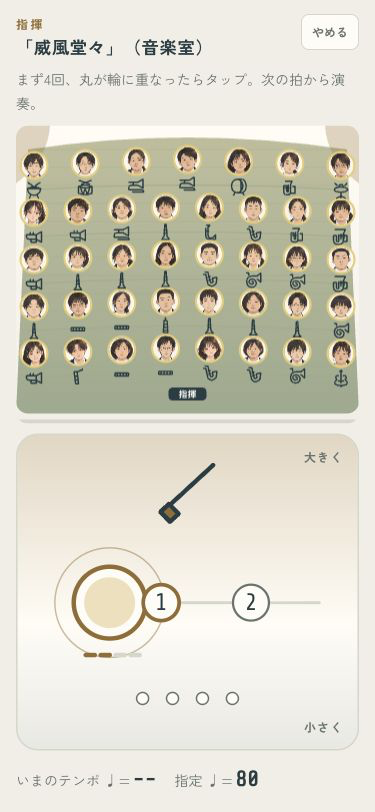
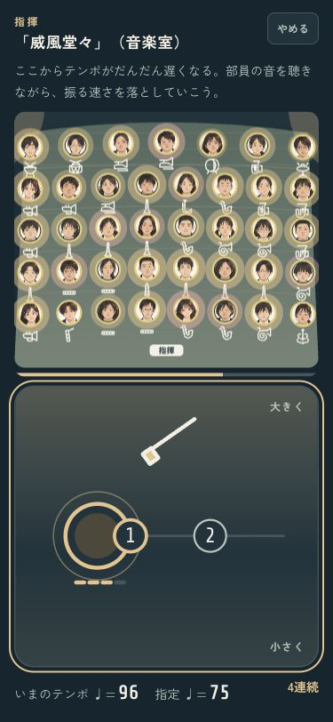
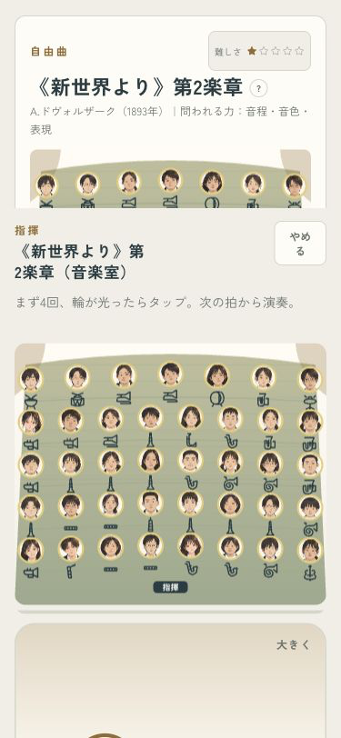
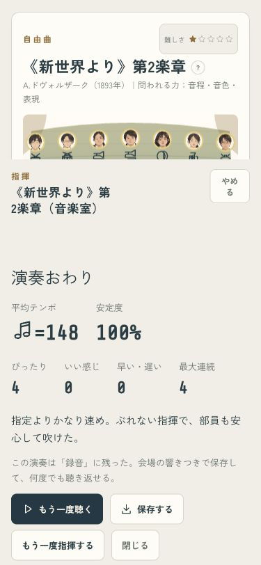

画面処理が重いときも、指が触れた時刻でテンポと判定をそろえるようにしました。予告の数字の更新も減らしています。
50〜160msの処理待ちを加えて確認しました。
| 判定 | 修正前 | 修正後 |
|---|---|---|
| ぴったり | 0回 | 5回 |
| いい感じ | 2回 | 0回 |
| 早い・遅い | 3回 | 0回 |




iPhoneへ導入済み。本体がロック中のため自動起動はできませんでした。実機の操作感は未確認です。ミラーリングは使っていません。
codex/design · pushなし